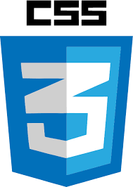

CSS El gran aliado del HTML: Fundamentos CSS y Frameworks CSS
Propósito del sitio
El objetivo de este espacio es orientar a los usuarios en el aprendizaje de diseño de páginas web. Se explicarán los principales conceptos de CSS, su uso y aporte al lenguaje HTML, adicional se conocerán las principales características y los frameworks CSS que actualmente son los más importantes para el desarrollo de sitios web.
Fundamentos de CSS

Según la autora Ainoa Celaya Luna (2022), CSS-Cascading Style Sheets O en español Hojas de Estilo en Cascada es un lenguaje de programación similar a HTML que permite aplicar estilos a los distintos elementos de las páginas web.
Partes del CSS:
Su sintaxis se compone de tres partes principales:
selector{propiedad:valor;}
Selector: Indica a qué etiqueta se HTML se aplica el estilo Propiedad: En esta opción se define a qué propiedad de la etiqueta se aplica el estilo. Algunas de ellas son:
font-style
font-weight: 400;
(500, 700)
font-family: Open Sans;
font-size: 14px;
text-align: center;
text-transform: uppercase
Valor: Valor de la propiedad, es decir, indica qué estilo se debe aplicar a cada propiedad de acuerdo al selector indicado.
Formas para aplicar CSS a un HTML:
1. Mediante atributo style: Este atributo es de CSS pero se inserta directamente dentro de las etiquetas de HTML 2. Mediante la etiqueta style: Se inserta el código CSS dentro de un HTML, usando la etiqueta llamada "style" 3. Mediante un archivo CSS externo: Es la forma más recomendable de aplicar estilos a una página HTML, consiste en tener una hoja de estilos CSS (archivo de texto) con la extensión .css, en este archivo se escriben las reglas de estilo en lenguaje CSS.
Un framework de CSS es una biblioteca de estilos genéricos que puede ser usada para implementar diseños web. Aportan una serie de utilidades que pueden ser aprovechadas frecuentemente en los distintos diseños web.
Según lo indicado en el blog aula formativa las principales ventajas y desventajas de usar frameworks de CSS son las siguientes:
Ventajas:
Agiliza el proceso del desarrollo
Facilita la funcionalidad en diversos navegadores
Permite trabajar con layout simétrica
Refuerza buenos hábitos de diseño
Desventajas:
Limita el diseño en cuanto al tamaño de los elementos y estilos, ya que cada framework de CSS tiene sus propias series de retículas, selectores, entre otros.
Añade código extra al código, lo que afecta si se desea que la aplicación sea ligera.
Fuerza a que se use la semántica propia de la framework